Case study for Weir, 2021 to 2022
A feature that provides self-service sign-up and access requests for Weir's Customer Portal. I took it from discovery to a shipped, tested release.
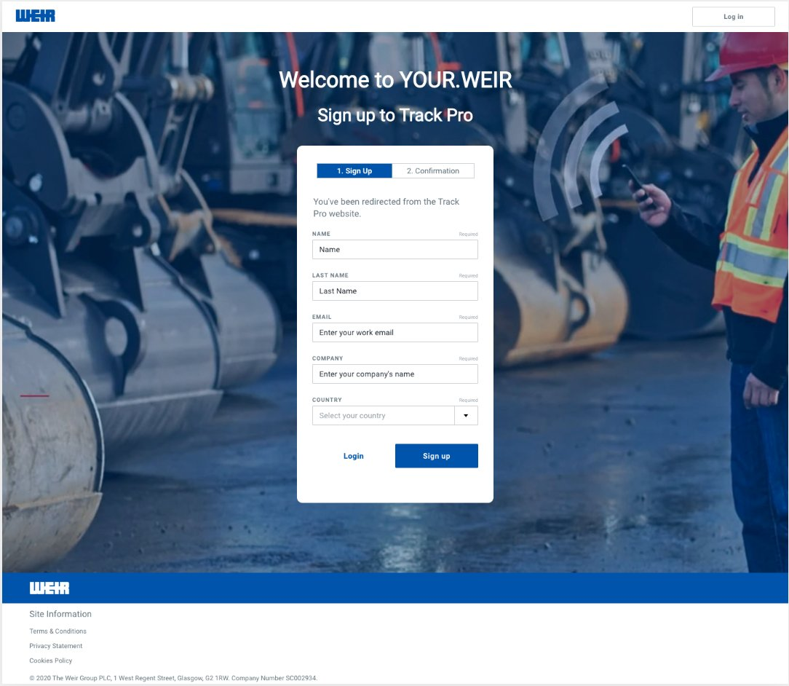
Key success metrics
Sign up, then request access. What used to run through several people and manual checks now takes two steps from the user.
Roughly how long it takes, in an ideal case, for a user to sign up, request access, and get approved.
Average adoption of the self-service journeys, with invitations still used for a small set of strategic accounts.
The task
Getting access meant asking a team leader or account manager, who emailed an App Manager, who worked through several manual checks before sending anything. I designed a self-service layer that replaces most of that, while keeping invitations for the accounts that sales is actively managing.
Who it served
Just needs into an app. Often didn't know how to ask, or who the App Manager even was.
Reviews and assigns access for their own apps, manually, per user, per site.
Same job as a Manager, across every app a business entity owns.
The process
Understanding the system first, then the users, then the build. Each stage feeding the next.
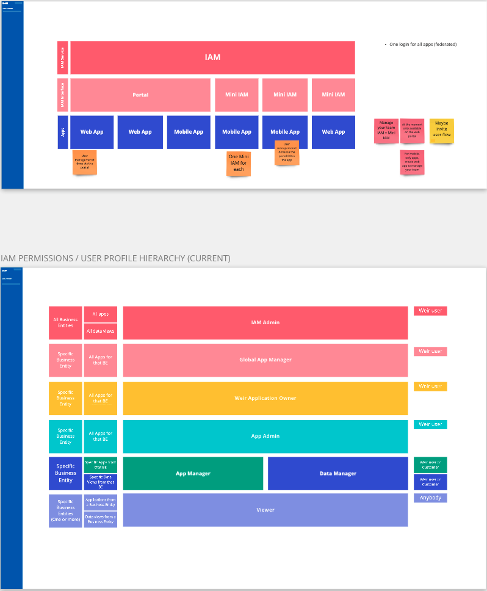
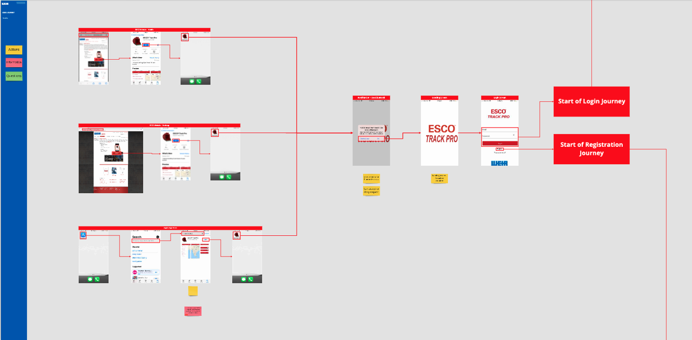
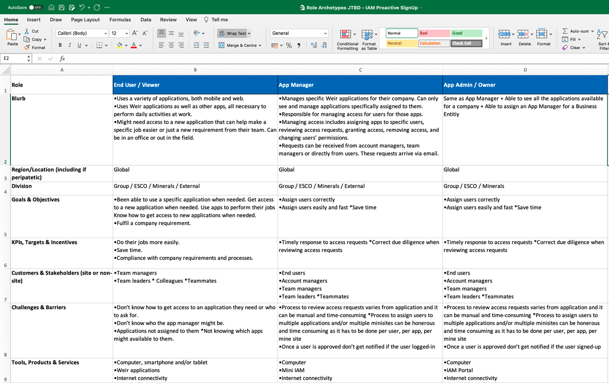
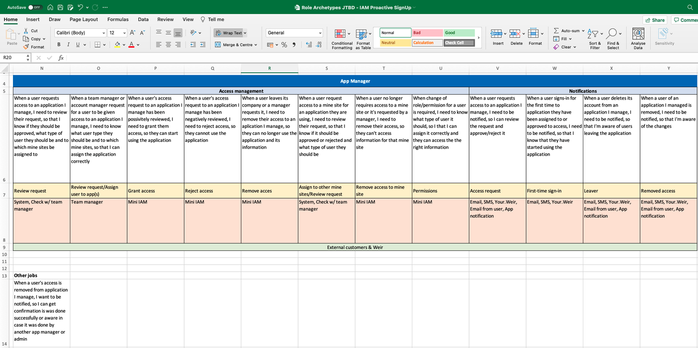
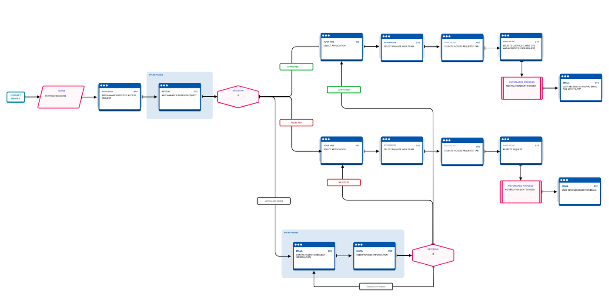
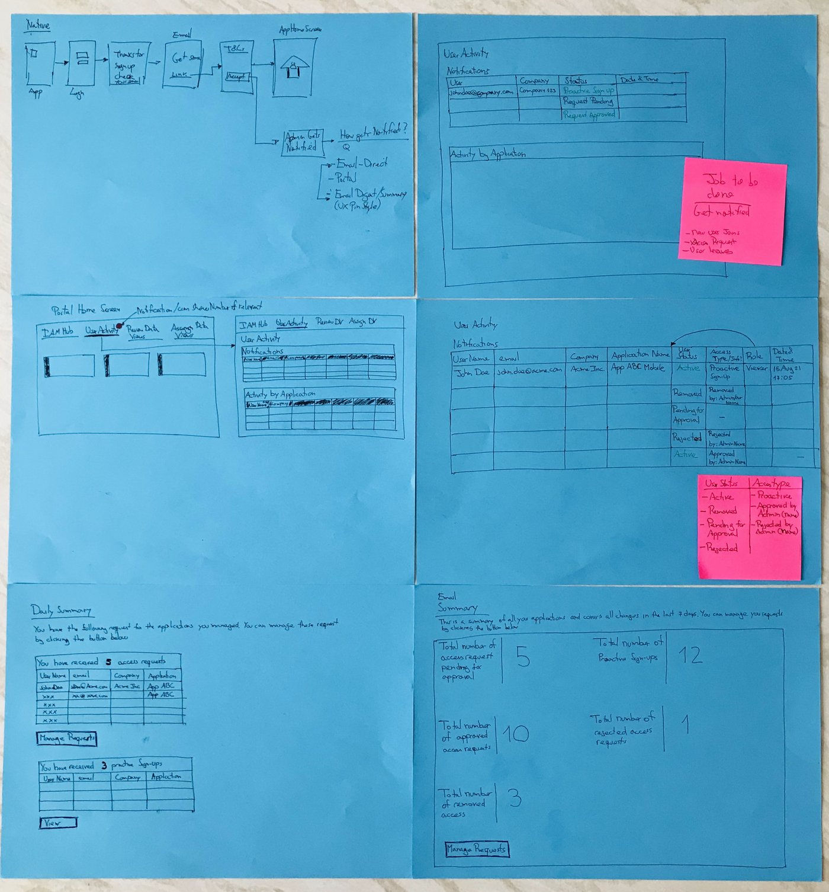
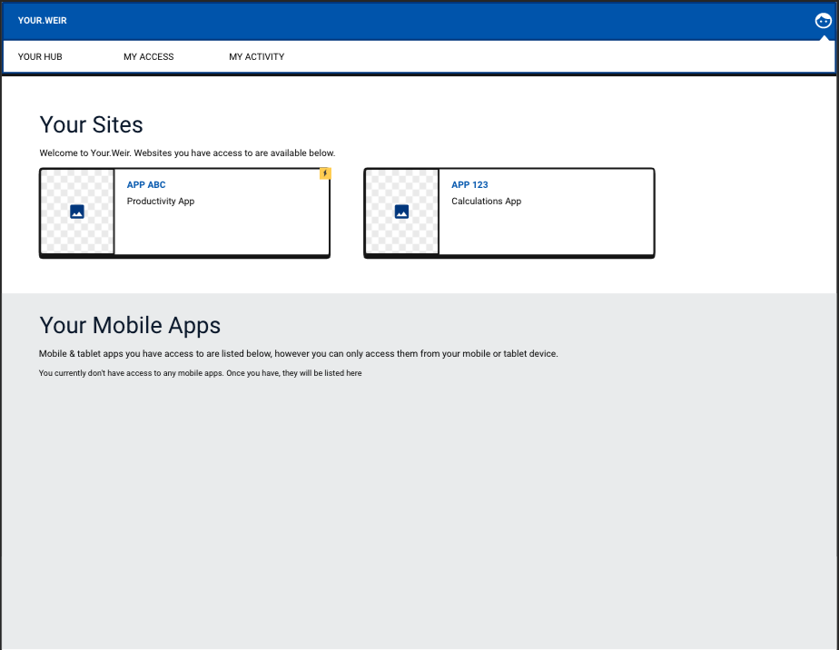
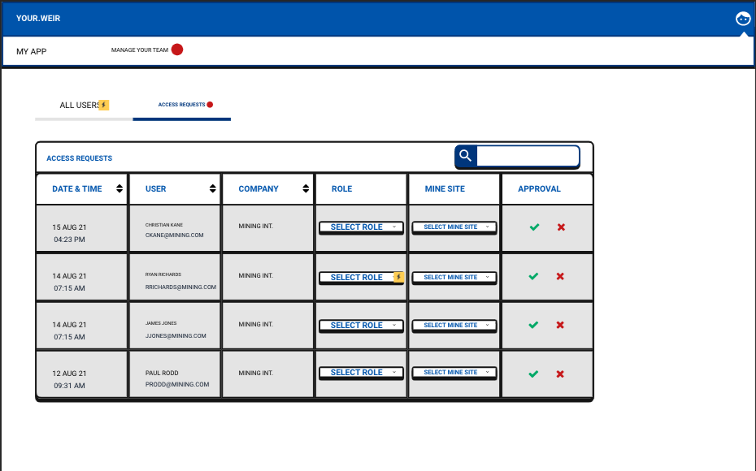
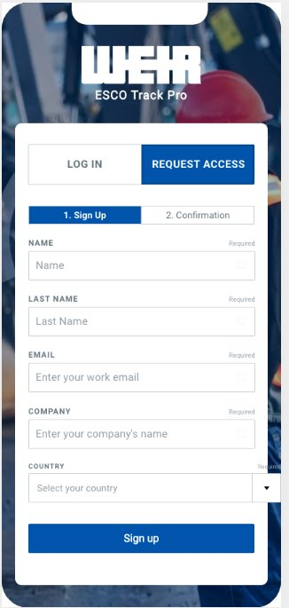
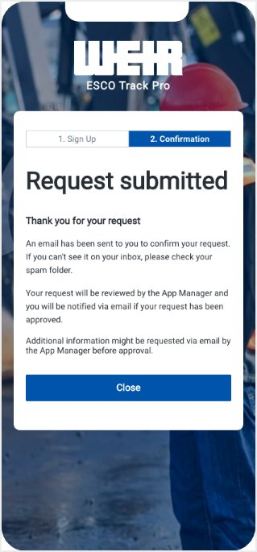
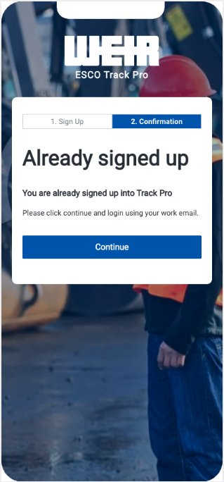
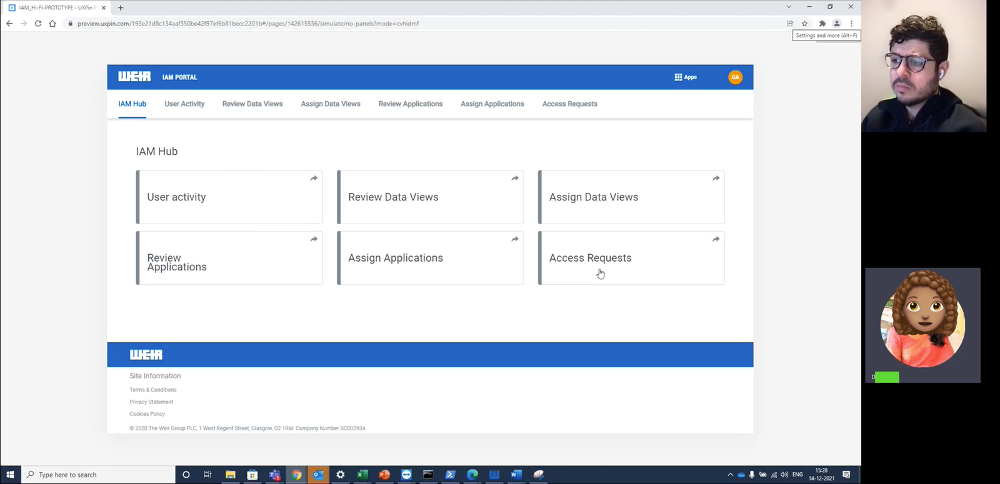
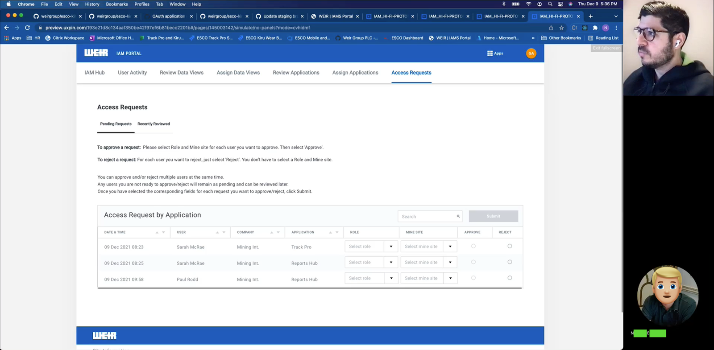
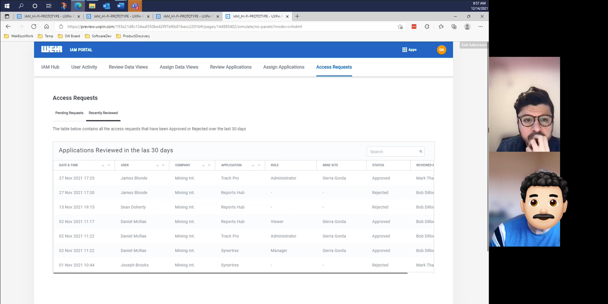
A senior stakeholder asked, quite firmly, for a button to be removed. In their view it was one less step, easier for the user, and easier to build. It was an opinion, not evidence. Testing showed the opposite: users wanted that extra validation, not less of it. I brought the sessions that proved it, and the stakeholder backed down. We kept the button.
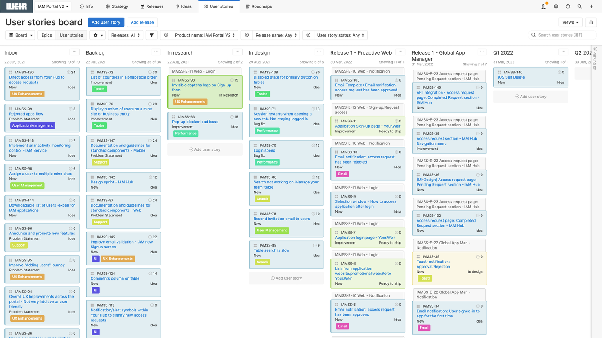
Outcome
The overall process is faster and simpler. However, it's the clarity and the visibility that I consider valuable, or even more, than the speed. We now have a clear journey for the end-users, in a well-defined process for their organisation (Business Users, Application Teams, Sales Teams, Stakeholders).
This means that everybody knows how it needs to be done, and if something happens, a problem is easy to resolve. Not getting in the way of users getting access to what they need, which ultimately is what we're striving towards.